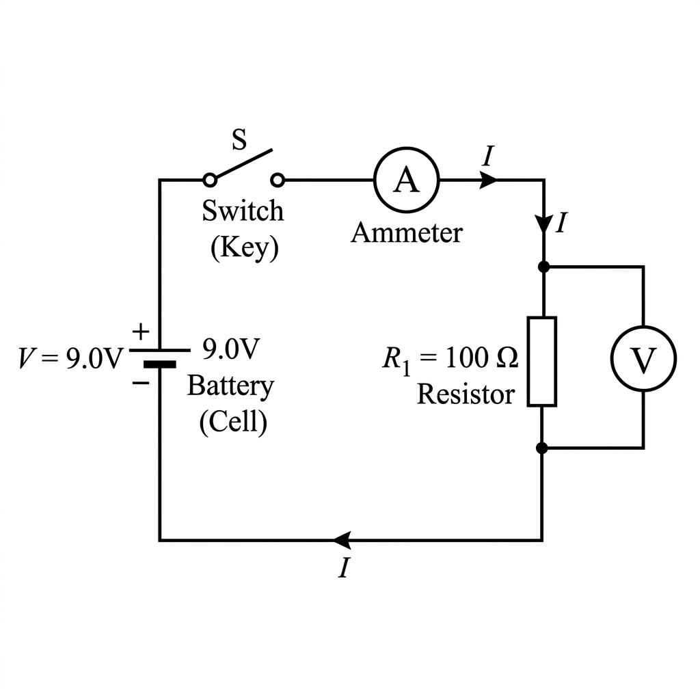

SuperSheet: Current Electricity
Master all CBSE question paper patterns. The most exhaustive collection of PYQs, HOTS, NCERT Exemplar, and Board-Level problems covering Ohm's Law, Circuits, Heating Effect, and Power.
Type 1: Electric Charge, Current & Potential Difference
$$Q = ne \implies n = \frac{Q}{e}$$
$$n = \frac{1}{1.6 \times 10^{-19}} = \mathbf{6.25 \times 10^{18} \text{ electrons}}$$
$$I = 0.5 \text{ A}, t = 10 \times 60 = 600 \text{ s}$$
$$Q = I \times t = 0.5 \times 600 = \mathbf{300 \text{ C}}$$
$$V = \frac{W}{Q} \implies W = V \times Q$$
$$W = 12 \text{ V} \times 2 \text{ C} = \mathbf{24 \text{ J}}$$
Each coulomb means $Q = 1 \text{ C}$.
$$W = V \times Q = 6 \text{ V} \times 1 \text{ C} = \mathbf{6 \text{ J}}$$
$$Q = I \times t = 0.2 \times 30 = \mathbf{6 \text{ C}}$$
Number of electrons $n = \frac{Q}{e} = \frac{6}{1.6 \times 10^{-19}} = \mathbf{3.75 \times 10^{19}}$
$$I = 5 \times 10^4 \text{ A}$$
$$t = 100 \times 10^{-6} \text{ s} = 10^{-4} \text{ s}$$
$$Q = I \times t = 5 \times 10^4 \times 10^{-4} = \mathbf{5 \text{ C}}$$
**Ammeter** measures current, which remains the same in series. It has very low resistance so it doesn't alter the circuit's current.
**Voltmeter** measures potential difference, which is same across parallel branches. It has very high resistance so it draws negligible current.
Type 2: Ohm's Law & Factors Affecting Resistance
$$R = \frac{V}{I} = \frac{60}{4} = 15 \,\Omega$$
When $V = 120 \text{ V}$, $I = \frac{V}{R} = \frac{120}{15} = \mathbf{8 \text{ A}}$

By Ohm's Law:
$$R = \frac{V}{I} = \frac{12 \text{ V}}{2 \text{ A}} = \mathbf{6 \,\Omega}$$
For first conductor: $R = \rho \frac{l}{A}$
For second conductor: $R = \rho \frac{2l}{A'}$
Equating the two: $\rho \frac{l}{A} = \rho \frac{2l}{A'} \implies \mathbf{A' = 2A}$
Volume remains constant. When radius is halved, Area $A \rightarrow A/4$.
To keep volume constant ($A \times l$), length must become $4l$.
New resistance $R' = \rho \frac{4l}{A/4} = 16 \left(\rho \frac{l}{A}\right) = 16 \times 10 = \mathbf{160 \,\Omega}$
In a $V$ vs $I$ graph (V on Y-axis, I on X-axis), Slope $= \frac{\Delta V}{\Delta I} = R$.
A steeper slope means a greater value of resistance.
Therefore, **wire A has higher resistance**.
$$l = 1 \text{ m}, R = 26 \,\Omega, d = 0.3 \times 10^{-3} \text{ m}$$
$$A = \frac{\pi d^2}{4} = \frac{3.14 \times (3 \times 10^{-4})^2}{4} = 7.065 \times 10^{-8} \text{ m}^2$$
$$\rho = \frac{RA}{l} = 26 \times 7.065 \times 10^{-8} = \mathbf{1.84 \times 10^{-6} \,\Omega\cdot\text{m}}$$
When folded double, length $l \rightarrow l/2$, Area $A \rightarrow 2A$.
New resistance $R' = \rho \frac{l/2}{2A} = \frac{1}{4} \rho \frac{l}{A} = \mathbf{\frac{R}{4}}$
Resistance becomes one-fourth.
$$R = \rho \frac{l}{A} \implies A = \frac{\rho l}{R}$$
Since $l$ and $R$ are constant, $A \propto \rho$.
Because wire A has higher resistivity ($\rho_A > \rho_B$), wire A must have a larger cross-sectional area, so **wire A is thicker**.
1. Alloys generally have **higher resistivity** than pure metals.
2. Alloys do not oxidize (burn) readily at high temperatures.
Type 3: Resistors in Series and Parallel
Highest is in Series: $R_{eq} = 4 + 8 + 12 + 24 = \mathbf{48 \,\Omega}$
Lowest is in Parallel: $\frac{1}{R_{eq}} = \frac{1}{4} + \frac{1}{8} + \frac{1}{12} + \frac{1}{24} = \frac{12}{24} = \frac{1}{2} \implies R_{eq} = \mathbf{2 \,\Omega}$
(a) $I_1 = 12/5 = \mathbf{2.4 \text{ A}}$, $I_2 = 12/10 = \mathbf{1.2 \text{ A}}$, $I_3 = 12/30 = \mathbf{0.4 \text{ A}}$
(b) Total current $I = 2.4 + 1.2 + 0.4 = \mathbf{4.0 \text{ A}}$
(a) Connect $3 \,\Omega$ and $6 \,\Omega$ in parallel, then in series with $2 \,\Omega$.
$R_p = \frac{3 \times 6}{3 + 6} = 2 \,\Omega$. Total $= 2 + 2 = \mathbf{4 \,\Omega}$.
(b) Connect all three in parallel.
$\frac{1}{R} = \frac{1}{2} + \frac{1}{3} + \frac{1}{6} = \frac{3 + 2 + 1}{6} = 1 \implies R = \mathbf{1 \,\Omega}$.
$$\frac{1}{R_p} = \frac{1}{100} + \frac{1}{50} + \frac{1}{500} = \frac{5 + 10 + 1}{500} = \frac{16}{500}$$
$$R_p = \frac{500}{16} = \mathbf{31.25 \,\Omega}$$
$$I = 5 \text{ A}, V = 220 \text{ V} \implies R_{eq} = \frac{V}{I} = \frac{220}{5} = 44 \,\Omega$$
For $n$ identical resistors in parallel, $R_{eq} = \frac{R}{n}$
$$44 = \frac{176}{n} \implies n = \frac{176}{44} = \mathbf{4 \text{ resistors}}$$
The two resistors are in parallel.
$$R_{eq} = \frac{3 \times 6}{3 + 6} = \frac{18}{9} = \mathbf{2 \,\Omega}$$
Resistance of each piece = $R/5$
When 5 such pieces are in parallel, $R' = \frac{R/5}{5} = \frac{R}{25}$
Ratio $\frac{R}{R'} = \frac{R}{R/25} = \mathbf{25}$
Equivalent of parallel pair: $R_p = \frac{4 \times 4}{4+4} = 2 \,\Omega$
Total resistance $R_{total} = 2 \,\Omega \text{ (series)} + 2 \,\Omega \text{ (parallel)} = 4 \,\Omega$
Total current $I = \frac{V}{R_{total}} = \frac{6}{4} = \mathbf{1.5 \text{ A}}$
Total resistance $R_s = 10 + 20 = 30 \,\Omega$
Current $I = \frac{V}{R_s} = \frac{6}{30} = 0.2 \text{ A}$
Potential difference across $10 \,\Omega$: $V_{10} = I \times 10 = 0.2 \times 10 = \mathbf{2 \text{ V}}$
Type 4: Heating Effect of Electric Current & Power
$$Q = 96000 \text{ C}, V = 50 \text{ V}$$
Heat generated $H = W = V \times Q = 50 \times 96000 = \mathbf{4.8 \times 10^6 \text{ J}}$
(Or $4800 \text{ kJ}$)
$$R = 20 \,\Omega, I = 5 \text{ A}, t = 30 \text{ s}$$
$$H = I^2Rt = (5)^2 \times 20 \times 30 = 25 \times 600 = \mathbf{15000 \text{ J} \text{ (or } 15 \text{ kJ)}}$$
Resistance of bulb $R = \frac{V^2}{P} = \frac{(220)^2}{100} = 484 \,\Omega$
When operated at $110 \text{ V}$, new power $P' = \frac{V'^2}{R} = \frac{(110)^2}{484} = \frac{12100}{484} = \mathbf{25 \text{ W}}$
Energy consumed in 1 day = $400 \text{ W} \times 8 \text{ h} = 3200 \text{ Wh} = 3.2 \text{ kWh}$
Energy in 30 days = $3.2 \times 30 = 96 \text{ kWh}$
Total cost = $96 \times 3.00 = \mathbf{₹288}$
**Case (i):** $R_s = 3 \,\Omega$. Current $I = 6/3 = 2 \text{ A}$.
Power in $2 \,\Omega = I^2R = (2)^2 \times 2 = \mathbf{8 \text{ W}}$
**Case (ii):** Voltage across $2 \,\Omega$ is $4 \text{ V}$.
Power in $2 \,\Omega = V^2/R = (4)^2/2 = 16/2 = \mathbf{8 \text{ W}}$
The power used is the **same** in both cases.
Resistance $R = \frac{V^2}{P}$. Since $V$ is same, $R \propto \frac{1}{P}$.
So the **$60 \text{ W}$ bulb** has greater resistance.
In series, current $I$ is same. Power dissipated $P = I^2R$.
Since $60 \text{ W}$ bulb has higher $R$, it dissipates more power and **glows brighter** in series.
$$P = V \times I = 220 \times 5 = \mathbf{1100 \text{ W} = 1.1 \text{ kW}}$$
Energy $E = P \times t = 1100 \text{ W} \times 2 \text{ h} = \mathbf{2200 \text{ Wh} = 2.2 \text{ kWh}}$
Original power $P_1 = \frac{V^2}{R} = \frac{V^2}{100}$
When cut in half, each part is $50 \,\Omega$. In parallel, $R_p = \frac{50 \times 50}{50 + 50} = 25 \,\Omega$
New power $P_2 = \frac{V^2}{R_p} = \frac{V^2}{25}$
Ratio $\frac{P_2}{P_1} = \frac{1/25}{1/100} = \mathbf{4}$
$$P = 2.2 \text{ kW} = 2200 \text{ W}$$
Current $I = \frac{P}{V} = \frac{2200}{220} = \mathbf{10 \text{ A}}$
Energy $E = P \times t = 2.2 \text{ kW} \times 3 \text{ h} = \mathbf{6.6 \text{ kWh}}$
Archived Chapter Notes Problems
📋 CBSE Board PYQ — Master Problem Types (All Types Solved)
Below are all the important problem categories from previous years' CBSE board examinations with fully worked solutions.
Type 1: Basic Formula Applications — Charge, Current, Potential Difference
These are direct formula application questions: $I = Q/t$, $V = W/Q$, $V = IR$.
Q. How much work is done in moving a charge of 2 Coulombs from a point at 118 V to a point at 128 V?
Q. An electric bulb is rated 220 V and 100 W. When it is operated on 110 V, what will be the power consumed?
Note: Power becomes 1/4 when voltage is halved — since P ∝ V².
Q. An electric charge of 4 μC is placed at a point. The charge flows through it in 0.2 s. What is the current?
Type 2: Ohm's Law Numericals — Finding V, I, or R
Q. A wire of resistance 8 Ω is bent in the form of a closed circle. What is the effective resistance between the two ends of a diameter?
Type 3: Resistivity and Wire Problems (Stretching, Folding)
Q. A wire of resistivity $\rho$ is stretched to double its length. How does its resistance change?
Q. A wire has a resistance of 16 Ω. It is folded in half (bent to half its length). What is its new resistance?
Alternatively: Two pieces of $R_1 = R_2 = 8\,\Omega$ in parallel: $R_p = (8 \times 8)/(8+8) = 4\,\Omega$ ✓
Q. Two wires of same material have the same length. Wire A has double the radius of wire B. What is the ratio of their resistances $R_A : R_B$?
Type 4: V-I Graph Problems
Q. The V-I graph for two wires A and B are given (wire A has a steeper slope). Which wire has greater resistance? Which has greater resistivity if their lengths are the same?
Q. The V-I graph of a resistor is a straight line at low current but curves (slope increases) at high current. Why?
Type 5: Series Circuit Problems
Q. Three resistors of 5 Ω, 10 Ω, and 15 Ω are connected in series to a 12 V battery. Find: (a) total resistance, (b) current through the circuit, (c) voltage across the 10 Ω resistor.
Type 6: Parallel Circuit Problems
Q. Three resistors of 6 Ω, 10 Ω, and 15 Ω are connected in parallel to a 6 V battery. Find: (a) equivalent resistance, (b) total current from battery, (c) current through each resistor.
$\dfrac{1}{R_p} = \dfrac{1}{6} + \dfrac{1}{10} + \dfrac{1}{15} = \dfrac{5 + 3 + 2}{30} = \dfrac{10}{30} = \dfrac{1}{3}$
$\therefore R_p = \mathbf{3 \, \Omega}$
$I_1 = V/R_1 = 6/6 = 1 \text{ A}$
$I_2 = V/R_2 = 6/10 = 0.6 \text{ A}$
$I_3 = V/R_3 = 6/15 = 0.4 \text{ A}$
Check: $1 + 0.6 + 0.4 = 2$ A ✓
Type 7: Mixed / Complex Circuit Problems
Q. In the circuit shown, R₁ = 4 Ω and R₂ = 12 Ω are connected in parallel. This parallel combination is then connected in series with R₃ = 2 Ω. The battery is 12 V. Find (a) the equivalent resistance of the whole circuit, (b) total current, (c) current through R₂.
$R_{12} = \dfrac{4 \times 12}{4 + 12} = \dfrac{48}{16} = 3 \, \Omega$
$R_{total} = R_{12} + R_3 = 3 + 2 = 5 \, \Omega$
$V_{12} = I \times R_{12} = 2.4 \times 3 = 7.2 \text{ V}$
$I_2 = V_{12}/R_2 = 7.2/12 = \mathbf{0.6 \text{ A}}$
Type 8: Joule's Heating Effect Problems
Q. An electric iron of resistance 20 Ω takes a current of 5 A. Calculate the heat developed in 30 seconds.
Q. Two resistors R₁ = 5 Ω and R₂ = 10 Ω are connected (i) in series and (ii) in parallel. In which case is more heat generated, and in which resistor? Given current $I = 2$ A in series.
$H_1 = I^2 R_1 t = 4 \times 5 \times t = 20t$
$H_2 = I^2 R_2 t = 4 \times 10 \times t = 40t$
More heat in R₂ (higher R). Total = 60t J.
$H_1 = (V^2/R_1)t = (100/5)t = 20t$
$H_2 = (V^2/R_2)t = (100/10)t = 10t$
More heat in R₁ (lower R). Total = 30t J.
Type 9: Electric Power Problems
Q. Two bulbs are rated 60W, 220V and 100W, 220V respectively. Which bulb has higher resistance? When connected in series to 220V, which bulb will glow brighter?
$R_{60} = 220^2/60 = 807 \, \Omega$
$R_{100} = 220^2/100 = 484 \, \Omega$
∴ The 60W bulb has higher resistance.
∴ The 60W bulb glows brighter in series.
Q. An electric motor takes 5 A from a 220 V line. Determine the power of the motor and the energy consumed in 2 hours.
Type 10: Commercial Energy & Electricity Bill Calculation
Q. A household has the following appliances: (i) 5 LED bulbs of 10W each, used 6 hours/day, (ii) a refrigerator of 200W used 24 hours/day, (iii) a TV of 100W used 4 hours/day. Calculate the total energy consumed in 30 days and the monthly bill at ₹6 per unit.
$E_1 = 5 \times 0.01 \text{ kW} \times 6 \text{ h} \times 30 = 0.05 \times 180 = 9 \text{ kWh}$
$E_2 = 0.2 \text{ kW} \times 24 \text{ h} \times 30 = 144 \text{ kWh}$
$E_3 = 0.1 \text{ kW} \times 4 \text{ h} \times 30 = 12 \text{ kWh}$
Type 11: Assertion-Reason and Conceptual Questions
Q. Why is Ammeter connected in series?
A. So that the same current that flows in the circuit also passes through the ammeter. Its very
low resistance ensures it does not change the circuit current.
Q. Why is Voltmeter connected in parallel?
A. So that it measures the potential difference between the two points. Its very high
resistance ensures negligible current flows through it, so it doesn't disturb the circuit.
Q. Why are household appliances connected in parallel and not series?
A. (i) In parallel, each appliance gets the full supply voltage (220V) regardless of others.
(ii) If one appliance fails, others continue working. (iii) Each can be independently switched on/off.
Q. Why does the resistance of a metallic conductor increase with temperature?
A. At higher temperatures, the atoms in the metal lattice vibrate with greater amplitude. This
increases the frequency of collisions between free electrons and atoms, making it harder for electrons
to flow → increased resistance.
Q. Why is the filament of an electric bulb made of tungsten?
A. Tungsten has a very high melting point (~3380°C), so it can withstand the very high
temperatures (above 2000°C) required to emit visible white light without melting.
Q. Why are nichrome alloys used in heating devices instead of pure metals?
A. Nichrome has (i) high resistivity → generates more heat, (ii) high melting point →
withstands high temperatures, and (iii) does not oxidize (corrode) in air at high temperatures.
Type 12: Advanced Numerical — Current Distribution in Parallel
Q. In the figure, R₁ = 3 Ω, R₂ = 6 Ω are in parallel between A and B. This is connected in series with R₃ = 4 Ω and a 10V battery (internal resistance negligible). Find: (a) current through the battery, (b) the current through R₂, (c) the voltage drop across the parallel combination.
Type 14: Finding Equivalent Resistance for Complex Configurations
Q. Calculate the equivalent resistance between A and B for the following: Three resistors of 6Ω each. Two are in parallel, and that combination is in series with the third.
Q. In a circuit, four 2Ω resistors are arranged: two pairs are in series (each pair = 2Ω + 2Ω = 4Ω), and these two series combinations are connected in parallel. Find the equivalent resistance.
📌 Master Summary — All Formulas at a Glance
| Quantity / Law | Formula | SI Unit |
|---|---|---|
| Electric Current | $I = Q/t$ | Ampere (A) |
| Potential Difference | $V = W/Q$ | Volt (V) |
| Ohm's Law | $V = IR$ | — |
| Resistance | $R = V/I = \rho l/A$ | Ohm (Ω) |
| Resistivity | $\rho = RA/l$ | Ohm-metre (Ω·m) |
| Resistors in Series | $R_s = R_1 + R_2 + R_3$ | Ohm (Ω) |
| Resistors in Parallel | $1/R_p = 1/R_1 + 1/R_2 + 1/R_3$ | Ohm (Ω) |
| Joule's Law of Heating | $H = I^2 Rt = VIt = V^2t/R$ | Joule (J) |
| Electric Power | $P = VI = I^2R = V^2/R$ | Watt (W) |
| Electric Energy (commercial) | $E = Pt$ (kW × hours) | kWh (1 unit) |
| Wire stretching (n times) | $R' = n^2 R$ | — |
| Resistance of rated device | $R = V_{rated}^2 / P_{rated}$ | Ohm (Ω) |
| 1 kWh in Joules | $1 \text{ kWh} = 3.6 \times 10^6 \text{ J}$ | — |
- ✅ Direction of current (conventional) vs direction of electron flow
- ✅ Ammeter → Series, Low R | Voltmeter → Parallel, High R
- ✅ V-I slope = R (steeper = more R)
- ✅ Wire stretched to n× → R becomes n²×
- ✅ Series: same I, voltage divides | Parallel: same V, current divides
- ✅ In Series → Brighter = Higher R (Low Watt) | In Parallel → Brighter = Lower R (High Watt)
- ✅ Nichrome: heating element | Tungsten: bulb filament | Cu/Al: wires
- ✅ 1 kWh = 3.6 × 10⁶ J = 1 Unit on electricity bill
- ✅ Joule's Law: $H = I^2Rt$ | Power: $P = VI = I^2R = V^2/R$
📖 Type 15: Case Study Based Questions (CBSE 2021 onwards)
Case study questions are a 4-mark question pattern introduced from 2021. A paragraph is given, followed by 4 MCQs or short answers based on it. Below are the most important ones from Electricity.
Passage: Ravi sets up a circuit with a battery of 6V, a plug key, an ammeter, and three resistors $R_1 = 2\,\Omega$, $R_2 = 3\,\Omega$, $R_3 = 6\,\Omega$ connected in parallel. He also connects a voltmeter across the parallel combination.
(a) What is the reading of the voltmeter?
(b) Calculate the equivalent resistance of the parallel combination.
(c) What is the total current shown by the ammeter?
(d) Which resistor carries the highest current and why?
(e) Why is the ammeter connected in series and voltmeter in parallel?
Passage: Priya's house has a geyser (2000W, 220V), a refrigerator (250W, 220V) and 5 fans (60W each, 220V), all connected in parallel to a 220V supply. The electrical contractor installs a 15A fuse in the main line.
(a) Why are all appliances connected in parallel?
(b) Calculate the total power consumption when all devices run simultaneously.
(c) Calculate the total current in the main line.
(d) Will the 15A fuse blow? What happens if the geyser's resistance wire breaks and causes a short circuit?
Passage: Two metallic wires P and Q are made of the same material. P has length $l$ and area of cross-section $A$. Q has length $2l$ and area of cross-section $A/2$. A student connects them in series and draws a V-I graph.
(a) Find the ratio of resistance of P to Q: $R_P : R_Q$
$\therefore R_P : R_Q = 1 : 4$
(b) If the total series resistance is 10 Ω, find $R_P$ and $R_Q$.
$R_P + 4R_P = 5R_P = 10$ ∴ $R_P = \mathbf{2\,\Omega}$, $R_Q = \mathbf{8\,\Omega}$
(c) Which wire (P or Q) will have a steeper slope on the V-I graph?
(d) If the same voltage V is applied, in which wire is more heat produced per unit time?
🔁 Type 16: Assertion-Reason Based MCQs (CBSE 2022 onwards)
In this type, both an Assertion (A) and a Reason (R) are given. Choose the correct option:
- (a) Both A and R are true, and R is the correct explanation of A.
- (b) Both A and R are true, but R is NOT the correct explanation of A.
- (c) A is true but R is false.
- (d) A is false but R is true.
A: The resistance of a metallic wire increases when its temperature is
increased.
R: On heating, the atoms in the metal vibrate with greater amplitude, increasing the
frequency of collisions with free electrons.
A: Copper is preferred over alloys for making electrical connecting wires.
R: Copper has a higher resistivity than most alloys.
A: In a parallel circuit, if one electrical appliance stops working due to a
fault, all other appliances continue to work.
R: In a parallel circuit, each appliance gets the full voltage of the supply line
independently.
A: When a wire is stretched to double its length, its resistance becomes 4
times.
R: Stretching a wire decreases its area of cross-section.
A: The voltmeter should have infinite resistance.
R: A voltmeter with infinite resistance draws no current and does not disturb the circuit
being measured.
✅ Type 17: Competency-Based MCQs (CBSE 2023-25 Pattern)
These are application-based MCQs that test deeper understanding, not just formula recall.
MCQ 1. A 100W, 220V bulb and a 60W, 220V bulb are connected in series across 220V supply. Which bulb glows brighter?
- (b) P₂ : P₁
- (c) 1 : 1
- (d) $\sqrt{P_1} : \sqrt{P_2}$
Reason: At rated voltage V, current $I = P/V$. So $I_1/I_2 = P_1/P_2$. Answer: P₁ : P₂.
MCQ 5. An electric fuse is made of lead-tin alloy because it has:
- (a) High resistivity and high melting point
- (b) Low resistivity and low melting point
- (c) High resistivity and low melting point ✔
- (d) Low resistivity and high melting point
Reason: A fuse must MELT quickly when excess current flows (low melting point) and must have enough resistance to heat up quickly (high resistivity).
📝 Type 18: Important 1-Mark Definitions & Short Answers
Q. Define electric current. Give its SI unit.
A. Electric current is the rate of flow of electric charges through a conductor. $I = Q/t$. SI unit:
Ampere (A).
Q. Define 1 Ampere.
A. The current is 1 Ampere when 1 Coulomb of charge flows through a conductor in 1 second. ($1A = 1C/1s$)
Q. Define potential difference. Give its SI unit.
A. The potential difference between two points is the work done per unit charge to move a positive charge
from one point to the other. $V = W/Q$. SI unit: Volt (V).
Q. State Ohm's Law.
A. At constant temperature, the electric current flowing through a conductor is directly proportional to the
potential difference across its ends. $V \propto I$ i.e., $V = IR$.
Q. Define resistance. Give its SI unit.
A. Resistance is the property of a conductor that opposes the flow of electric current through it. SI unit:
Ohm (Ω). $1\Omega = 1\text{V/A}$.
Q. Define resistivity (specific resistance). Give its SI unit.
A. Resistivity of a material is the resistance of a conductor of that material having unit length and unit
area of cross-section. $\rho = RA/l$. SI unit: Ohm-metre (Ω·m).
Q. State Joule's Law of heating.
A. The heat produced in a resistor is directly proportional to (i) the square of current ($I^2$), (ii)
resistance ($R$), and (iii) time ($t$) for which current flows. $H = I^2Rt$.
Q. Define electric power. Give its SI unit.
A. Electric power is the rate at which electrical energy is consumed by a device. $P = W/t = VI$. SI unit:
Watt (W). $1\text{W} = 1\text{J/s}$.
Q. What is the commercial unit of electric energy? Express it in joules.
A. The commercial unit is kilowatt-hour (kWh), commonly called a "unit". $1\text{ kWh} =
3.6 \times 10^6\text{ J}$.
Q. Why is the filament of an electric bulb made of tungsten?
A. Tungsten has a very high melting point (~3380°C) and high resistivity. It can glow at very high
temperatures without melting, emitting visible white light.
Q. Why is nichrome used in heating elements of electric appliances?
A. Nichrome has (i) high resistivity → generates more heat, (ii) high melting point → withstands high
temperatures, (iii) does not oxidize (corrode) readily at high temperatures.
Q. Why should the resistance of an ammeter be as low as possible?
A. So that when connected in series, it introduces negligible additional resistance and does not
significantly reduce or change the current being measured.
Q. Why should the resistance of a voltmeter be as high as possible?
A. So that when connected in parallel, negligible current flows through it, and it does not alter the
potential difference it is measuring.
🔢 Type 19: Important Numericals (Speed Practice)
Q1. A charge of 150 C flows through a wire in 1 minute. Find the current.
Q2. How long will it take for 48 C of charge to flow through a circuit if the current is 4 A?
Q3. A torch bulb draws a current of 0.3 A for 10 minutes. How much charge flows through it?
Q1. A 6V battery is connected across a resistance of 30 Ω. Find the current.
Q2. A current of 2 A flows through a resistor when connected to a 12V battery. What is the resistance?
Q3. A nichrome wire of length 1.5 m and area of cross-section $1.5 \times 10^{-6}$ m² has a resistivity of $1.0 \times 10^{-6}$ Ω·m. Find its resistance.
Q1. An electric heater of resistance 8 Ω draws 15 A from the service mains for 2 hours. Find the rate of heat developed and total energy consumed.
Q2. An electric bulb is rated 40W at 220V. How much current does it draw? What is its resistance?
\[R = \rho \frac{l}{A} \implies \rho = \frac{RA}{l} = \frac{R \times \pi r^2}{l}\] \[\rho = \frac{7 \times 22 \times 10^{-8}}{7 \times 0.01} \] \[= 22 \times 10^{-8} \times 10^{2} = 22 \times 10^{-6} \ \Omega\text{m} = 2.2 \times 10^{-5} \ \Omega\text{m}\]
\[P = \frac{V^2}{R} = \frac{200 \times 200}{20} = 2000 \text{ W} / 2 \text{ kW}\]
 Plot a graph between V and I and calculate the resistance of that resistor.
Plot a graph between V and I and calculate the resistance of that resistor. Resistance = Slope of V-I graph
Resistance = Slope of V-I graph\[R = \frac{BC}{AC} = \frac{6.0 - 1.2}{2.0 - 0.4} = \frac{4.8}{1.6} = 3\ \Omega\]
Q3. Read the following passage and answer the questions that follow:
Swati, a class 10 student, observes that when she passes close to the refrigerator in her kitchen, she feels the heat, although the things kept inside the refrigerator are cool.
(a) Describe the cause of heating in the above-mentioned case. [1 Mark]
(b) A current I flows through a resistor of resistance R when the potential difference across it is V. Applying Ohm's law, write the formula for amount of heat produced by the resistor in time t. [1 Mark]
(c) (i). Write any two practical applications of heating effect of electric current. [2 marks]
(c)(ii). Define the commercial unit of electric energy and express it in Joules (J). [2 Marks]
\[1\ \text{kWh} = 3.6 \times 10^6\ \text{J}\]
Q4. The correct way to connect an ammeter and a voltmeter in an electric circuit is: [1 Mark]
(A) Ammeter in parallel and voltmeter in series
(B) Ammeter and voltmeter both in parallel
(C) Ammeter in series and voltmeter in parallel
(D) Ammeter and voltmeter both in series
Q5. (a) Name a device which is used to:[3 Marks]
(i) Maintain a constant potential difference in a circuit.
(ii) Change the electric current in an electric circuit.
(b) When the potential difference between the terminals of an electric heater is 110 V, a current of 5 A flows through it. What will be the value of current flowing through it when the potential difference is increased to 220 V?
(a)
(i) Battery / Electric cell
(ii) Rheostat / Variable resistance
(b) Resistance of the heater:
\[R = \frac{V}{I} = \frac{110}{5} = 22\ \Omega\]
Current when potential difference is 220 V:
\[I' = \frac{V'}{R} = \frac{220}{22} = 10\ A\]
Q6. Consider the given electric circuit: [3 Marks] 
Calculate the following:
(a) Total resistance of the circuit
(b) The electric current drawn from the battery
(c) Potential difference between points P and Q
(a) 4Ω and 1Ω are in series: \(R_s = 4 + 1 = 5\ \Omega\)
Resistance across R and S (5Ω and 5Ω in parallel):
\[\frac{1}{R_1} = \frac{1}{5} + \frac{1}{5} \Rightarrow R_1 = \frac{5}{2}\ \Omega\]
2Ω and 3Ω are in series: \(R_{s1} = 2 + 3 = 5\ \Omega\)
Resistance across P and Q (5Ω and 5Ω in parallel):
\[\frac{1}{R_2} = \frac{1}{5} + \frac{1}{5} \Rightarrow R_2 = \frac{5}{2}\ \Omega\]
Total resistance:
\[R = R_1 + R_2 = \frac{5}{2} + \frac{5}{2} = 5\ \Omega\]
(b) \[I = \frac{V}{R} = \frac{10}{5} = 2\ A\]
(c) \[V_{PQ} = I \times R_2 = 2 \times \frac{5}{2} = 5\ V\]
Q7. A fuse in electric circuit is rated 4 A. Can it be used with an electric heater of rating 2 kW, 200 V? Explain your answer. [2 Marks]
\[I = \frac{P}{V} = \frac{2000}{200} = 10 \text{ A}\] Current passing through electric heater is 10 A which is much more than rated value (4 A) of fuse. Hence fuse will melt and break the circuit. So, it cannot be used.
Q8. (a) Define volt, the unit of potential difference.
(b) Calculate the work done required to move an electron between two points A and B located at a potential difference of 100 V in an electric field.
[2 Marks]
(a) 1 Volt is the potential difference between two points in a current carrying conductor when one Joule work is done to move a charge of 1 Coulomb from one point to the other. \(1V = \frac{1J}{1C}\)
(b)\[V = \frac{W}{Q}\] \[W = Q \times V = 1.6 \times 10^{-19} \times 100 = 1.6 \times 10^{-17} \text{ J}\]
Q9(A). (i) The given electric circuit is a part of an electrical device. Use the information given in the electric circuit diagram to calculate:
(i) The given electric circuit is a part of an electrical device. Use the information given in the electric circuit diagram to calculate:
(I) Potential difference across the ends of resistor R2.
(II) Value of resistor R2.
(III) Value of resistor R1.
(ii) Write the factors on which resistance of a conductor depends and derive the formula for resistance of a given conductor.
Let I be the total current flowing through the circuit and \(I_1\) and \(I_2\) be the currents flowing through 4Ω and R2 resistors.
(i)
- (I) Potential difference across R2 is same as that of across 4Ω resistor as they are connected in parallel.
\[V(\text{across } R_2) = I_1 \times R = 1.5 \times 4 = 6\text{ V}\] - (II) \[I_2 = I - I_1 = 2.0 - 1.5 = 0.5\text{ A}\] \[R_2 = \frac{V}{I_2} = \frac{6}{0.5} = 12\text{ }\Omega\]
- (III) Potential difference across 2Ω resistor: \(V = IR = 2 \times 2 = 4\text{ V}\)
Potential difference across R1 = 12 - (6 + 4) = 2 V
\[R_1 = \frac{V}{I} = \frac{2}{2} = 1\text{ }\Omega\]
- Length of the conductor (\(R \propto l\))
- Area of cross section \(\left(R \propto \frac{1}{A}\right)\)
- \[R \propto \frac{l}{A} \implies R = \rho \frac{l}{A}\] where \(\rho\) = Resistivity (a proportionality constant)
Q9(B). (i) How much electric current will an electric iron draw from 220 V source if the resistance of its heating element when hot, is 55 Ω? Calculate the power consumed by the electric iron when it is operated at 220 V.
(ii) In a house, 3 bulbs of 100 watt each, are lit for 5 hours daily and an electric heater of 1.0 kW is used for half an hour daily. Calculate the total energy consumed in a month of 30 days and its cost at the rate of ₹ 3.60 per kWh.
(iii) With reason explain, why are alloys commonly used to make elements of electrical heating devices. [5 Marks]
(i) \[I = \frac{V}{R} = \frac{220}{55} = 4\text{ A}\] \[P = VI = 220 \times 4 = 880\text{ W}\]
(ii) Energy (3 bulbs) \(= 3 \times 100 \times 5 = 1500\text{ Wh} = 1.5\text{ kWh}\)
Energy (electric heater) \(= 1.0 \times 0.5 = 0.5\text{ kWh}\)
Total energy consumed (1 day) \(= 1.5 + 0.5 = 2\text{ kWh}\)
Total energy consumed (30 days) \(= 30 \times 2 = 60\text{ kWh} = 60\text{ units}\)
Total cost \(= 60 \times 3.60 = \)₹ 216
(iii) The resistivity of an alloy is generally higher than that of its constituent metals. / Alloys do not oxidise (burn) readily at high temperatures.
Q10. (a) Why does an electric bulb become dim when an electric heater in parallel circuit is switched ON? [3 Mark]
(b) How to connect three resistors each of resistance 8 Ω, so that the equivalent resistance of the combination is 12 Ω? Draw diagram of the combination and justify your answer.
(b)
 \[\frac{1}{R_1} = \frac{1}{8} + \frac{1}{8}\] \[R_1 = 4\,\Omega\] \[R_{eq} = R_1 + 8\,\Omega = 4 + 8 = 12\,\Omega\]
\[\frac{1}{R_1} = \frac{1}{8} + \frac{1}{8}\] \[R_1 = 4\,\Omega\] \[R_{eq} = R_1 + 8\,\Omega = 4 + 8 = 12\,\Omega\]Q11. Three students Shweta, Ayesha and Samridhi were performing an experiment to understand the factors on which the resistance of a conductor depends. Each one of them completed electric circuit with the help of a cell, an ammeter, a plug key and wire. [4 Mark]
Shweta put nichrome wire of length 'l' in the circuit and after plugging the key, noted current in the ammeter.
Ayesha put nichrome wire of same thickness but twice the length i.e. '2l' in the circuit and after plugging the key, noted current in the ammeter.
Samridhi took copper wire of length 'l' and same thickness in the circuit and after plugging the key, noted current in the ammeter.
(a) If the ammeter reading is X ampere with nichrome wire of length 'l', then what will be the ammeter reading if the length of nichrome wire is doubled with same area of cross section?
(b) What happens to the ammeter reading if the area of cross-section of nichrome wire is doubled, keeping the length of wire 'l' the same?
(c) Define 'resistivity'. Write its SI unit. Compare the resistivity of an alloy with its constituents metals.
(b) Ammeter reading becomes 2X / doubled.
(c)
- Resistivity is equal to electrical resistance of a conductor of unit length and unit area of cross section.
- SI unit = Ω m / ohm metre
- Resistivity of an alloy is higher than its constituent metals.
Q12: Give reason: [2 Mark]
(i) Tungsten is used almost exclusively for making the filament of electric lamps.
(ii) Conductors of bread-toasters are made of an alloy rather than a pure metal.
(ii): The resistivity of an alloy is generally higher than that of its constituent metals. / Alloys do not oxidise (burn) readily at high temperatures.
Q13(a). (i) Due to change in length and area of cross-section of a conductor, resistance of conductor changes while resistivity does not change.
Why ? [5 Marks]
(ii) Conductors of electric toasters and electric iron are made of an alloy rather than a pure metal. Why ?
(iii) Define the S.I. unit of electric current.
(ii) The resistivity of an alloy is generally higher than that of its constituent metals. / Alloys do not oxidise (burn) readily at high temperatures.
(iii) 1 Ampere is constituted by the flow of 1 Coulomb of charge per second. / 1 A = 1 C / 1 s
Q13(b). (i) How many bulbs of resistance 8 Ω each should be connected in parallel combination to draw a current of 2 A from a battery of 4 V ? [5 Marks]
(ii) Name the device used for measuring electric current. How is it connected in a circuit ?
(iii) State Joule's law of heating.
\[R = \frac{V}{I} = \frac{4}{2} = 2 \ \Omega\] Let 'n' be the number of bulbs:
\[\frac{1}{R} = \frac{n}{8} \implies \frac{1}{2} = \frac{n}{8} \implies n = 4\] Therefore, 4 bulbs of resistance 8 Ω should be connected in parallel.
(ii) Ammeter In series
(iii) Heat generated through a current carrying conductor is directly proportional to square of current, resistance of conductor and time for which current flows in conductor. / H = I²Rt
Q1: A wire of resistance R is cut into three equal parts. If these three parts are then joined in parallel, calculate the total resistance of the combination so formed. (2 Mark)
The total resistance of the combination is R/9.
When a wire of total resistance R is cut into three equal parts, each part has a resistance of R/3 because resistance is directly proportional to length. When these three parts are connected in parallel, the reciprocal of equivalent resistance is Hence, the total equivalent resistance becomes
Hence, the total equivalent resistance becomes

Therefore, the total resistance of the parallel combination is R/9, which shows that connecting smaller equal parts of a wire in parallel greatly reduces the overall resistance.
Electric Power: Power (P) is defined as the rate of doing work or the rate at which electrical energy is consumed or supplied. It is given by the formula:
P = V × I, where V is the potential difference (volts) and I is the current (amperes). Alternatively, P = I²R or P = V²/R, where R is resistance (ohms). The SI unit of power is the watt (W).
1 Watt: Power is 1 watt when 1 joule of energy is consumed or transferred in 1 second. Mathematically, 1 W = 1 J/s. For example, if a circuit has a potential difference of 1 volt and a current of 1 ampere, the power is:
P = V × I = 1 V × 1 A = 1 W.
(b) Why are alloys used in electrical heating devices? (3 marks)
(a) Relationship: R = ρl/A; SI unit of resistivity: ohm-meter (Ω·m).
(b) Alloys are used due to high resistivity and high melting points.
(a) For a uniform cylindrical conductor of length l and cross-sectional area A, the resistance R is proportional to l and inversely proportional to A. Hence
SI unit derivation:
- Resistance (R) is in ohms (Ω).
- Area (A) is in square meters (m²).
- Length (l) is in meters (m).
- Unit of ρ = (Ω × m²)/m = Ω·m.
Thus, the SI unit of resistivity is ohm-meter (Ω·m).
(b) Alloys are used in electrical heating devices because their resistivity is generally higher than that of constituent metals and, importantly (as stated in the chapter), alloys do not oxidise (burn) readily at high temperatures - making them suitable and durable for heating elements.
In our homes, we receive the supply of electric power through a main supply also called mains, either supported through overhead electric poles or by underground cables. In our country the potential difference between the two wires (live wire and neutral wire) of this supply is 220 V.
(a) Write the colours of the insulation covers of the line wires through which supply comes to our homes. (1 Mark)
(b) What should be the current rating of the electric circuit (220 V) so that an electric iron of 1 kW power rating can be operated? (1 Mark)
(c) (i) What is the function of the earth wire? State the advantage of the earth wire in domestic electric appliances such as electric iron. (2 marks)
(a) Red (or brown) for live, black (or blue) for neutral, green (or green-yellow) for earth.
(b) Current rating = 4.55 A (minimum 5 A fuse).
(c) (i) Function: Provides a low-resistance path for leakage current to prevent electric shock; Advantage: Enhances user safety by grounding excess current.
(a) Colours:
In domestic wiring, the standard colours are:
- Live wire: Red or brown, carries current from the supply.
- Neutral wire: Black or blue, completes the circuit back to the supply.
- Earth wire: Green or green-yellow, provides a safety path for leakage current.
These colours help identify wires for safe installation and maintenance.
(b) Current rating:
- Power of electric iron, P = 1 kW = 1000 W.
- Voltage, V = 220 V.
- Power formula: P = V × I.

- The circuit needs a fuse with a current rating slightly higher than 4.54 A, typically 5 A, to safely operate the iron without frequent blowing.
(c) (i) Earth wire:
- Function: The earth wire connects the metallic body of an appliance to the ground via a metal plate buried in the earth. If there's a fault (e.g., live wire touching the metal body), it provides a low-resistance path for the leakage current to flow to the ground, preventing electric shock.
- Advantage: In appliances like an electric iron, the earth wire ensures that any leakage current is safely diverted, keeping the appliance's body at earth potential (0 V), thus protecting the user from severe electric shock.

In which circuit will the power dissipated in the circuit be (I) minimum (II) maximum ? Justify your answer. (2 Marks)
Analyze the circuits to determine power dissipation.
Use the formula for power dissipation: 


 Minimum power dissipation is in circuit (ii) and maximum is in circuit (iii).
Minimum power dissipation is in circuit (ii) and maximum is in circuit (iii).
OR
Two lamps, rated 100 W; 220 V and 60 W; 220 V, are connected in parallel to an electric main supply of 220 V. Find the current drawn by the two lamps from the supply. (2 marks)
Total current = 0.727 A.
Given: Lamp 1: 100 W, 220 V; Lamp 2: 60 W, 220 V; connected in parallel to 220 V supply.
Step 1: Current for each lamp
- Power formula: P = V × I.
- For Lamp 1:

- For Lamp 2:

Step 2: Total current in parallel
- In a parallel circuit, total current is the sum of individual currents:

Conclusion: